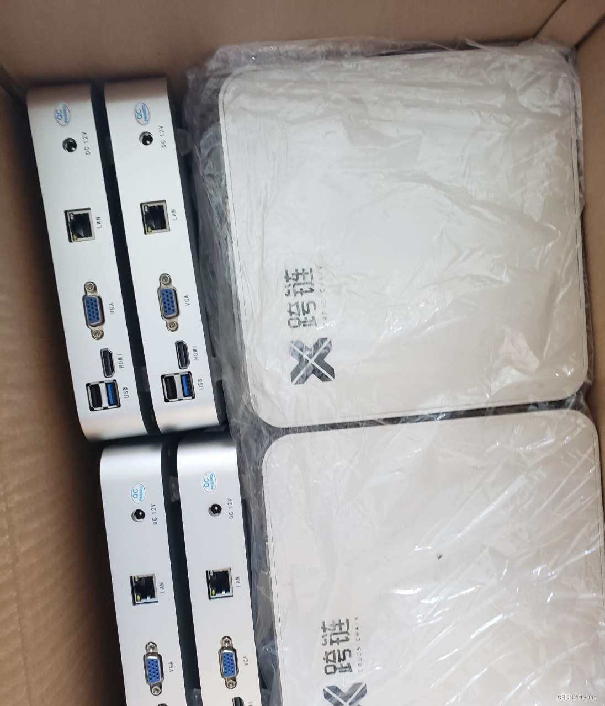
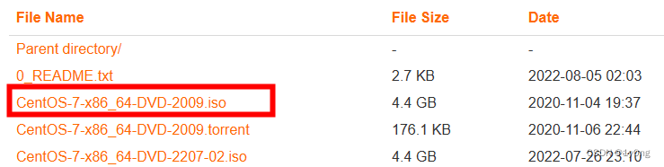
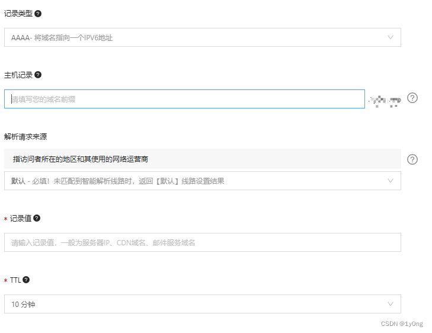

利用ipv6搭建一台服务器
背景
继上次发现ipv6以来由于要实习，一直只是在尝试部分小功能的实现，终于在这个春节假期才有了一大段空闲时间来部署服务器
硬件需求
首先要搭建属于自己的服务器得要有一定的硬件条件，服务器其实就是一台一天24小时开启的计算机，家里有一台10年前的电脑，处理器是4核的赛扬j1900，其实已经是满足我的基本需求了的，但一是电脑已经装了windows系统并储存了一些资料不能随意重装linux系统，所以我决定买一台迷你主机。
在某鱼上花280买了一台迷你主机，处理器是奔腾n3540,4+256的，同时准备一个储存大于或等于8G的u盘

准备工作
我准备使用centos7作为服务器的操作系统，所以要下载centos7的镜像
centos-7-isos-x86_64安装包下载_开源镜像站-阿里云 (aliyun.com)

下载balenaetcher将iso文件烧录至U盘中
balenaEtcher - Flash OS images to SD cards & USB drives
可以以这个up主的视频作为参考
（上）200买的小主机主板。刷机centos系统，centos服务器安装宝塔本地建站，保姆级教学，_哔哩哔哩_bilibili
（下）200买的小主机主板。刷机centos系统，centos服务器安装宝塔本地建站，保姆级教学，_哔哩哔哩_bilibili
安装系统
安装系统的步骤参考上面两个视频，但可能会遇得到安装失败情况（俺就遇到了）

原因是因为计算机插入U盘以后加上计算机本身自带的储存空间一共有两块硬盘，而我们在安装的时候没有指定安装文件（.iso）在哪个硬盘里面，所以安装失败，只需选中正确的安装硬盘就可以了，解决方法可以参照下面两个大佬的方法：
Centos7安装时引导错误以及解决方案_zwhfyy的博客-CSDN博客_centos 安装报错
Centos安装错误的解决方法_weixin_34205826的博客-CSDN博客
配置网络
系统安装完成以后就要开始配置网络了，我采取的方法是在局域网内使用固定的ipv4地址，同时开启centos的ipv6地址
首先使用ifconfig查看网卡名字和分配的ip地址，如果已经有ipv6和ipv4地址了就不用管了，如果没有就需要对网卡配置文件进行修改
使用以下命令对网卡配置进行修改
1 | vi /etc/sysconfig/network-scripts/ifcfg-网卡名字 #打开网卡配置文件 |
弄好以后可以用外网ping一下看分配到的ipv6地址是否能够ping通
目前如果在服务器上开启一些服务的话是通过http://[ipv6地址]:端口号来访问的，这样很麻烦，而且我们从运营商处得到的ipv6地址是一个**动态的地址，**随着计算机重启或者隔一段时间地址就会发生改变，所以我们要获取一个域名，并通过ddns将ipv6地址和域名绑定起来(懒得弄的也可以写个程序定时将ipv6地址发给自己)
获取域名
国内获得域名可以通过很多的渠道，我这里是在阿里云上花了8块买了一年的域名（需要实名认证），然后添加记录

记录类型选择AAAA表示ipv6地址
主机记录填写子域名名称
记录值填对应的ipv6地址
添加完后进行生效检测查看是否能够成功解析
DDNS
DDNS（Dynamic Domain Name Server，动态域名服务）是将用户的动态IP地址映射到一个固定的域名解析服务上，用户每次连接网络的时候客户端程序就会通过信息传递把该主机的动态IP地址传送给位于服务商主机上的服务器程序，服务器程序负责提供DNS服务并实现动态域名解析。
网上有很多如何使用DDNS的教程，这里我使用的是是一个大佬分享的python脚本（服务器要安装pyhton运行环境，可以直接下载一个宝塔，会自动安装pyhton3.6）
zeruns/-Python-aliddns_ipv4-ipv6: 阿里云域名ddns动态域名解析Python源码 (github.com)
使用教程：Python实现阿里云域名DDNS支持ipv4和ipv6 - Zeruns’s Blog
（可以先把自己在阿里云上的ipv6地址改成错误的，然后运行一次程序查看ipv6地址是否被修改回来了）
接着通过linux中的crontab设置定时任务运行python脚本（我的这里似乎不能直接运行python，需要将用shell脚本运行python然后再用在crontab中定时shell脚本）
1 |
|
添加定时任务
1 | crontab -e |
这样ipv6地址就和域名绑定起来了
到此为止基本的搭建任务就结束了
一些不得不提的安全问题
我们一般访问自己的linux服务器都是通过ssh的方式访问的，而将ssh服务直接暴露出来会存在一定的安全风险，所以我们最好做一些安全措施来保护我们的服务器不被他人入侵
1.使用密钥登录ssh而非使用密码登录，防止被他人暴力破解
2.修改ssh服务的默认端口，ssh的默认端口是22，而网上很多端口扫描的工具都会将22端口作为端口进行扫描
3.取消root登录
4.使用knockd来隐藏端口（终极隐藏大法）
knockd：CVM云主机的隐形斗篷 - 腾讯云开发者社区-腾讯云 (tencent.com)
虽然这些操作很复杂，但我想告诉你网络安全真的很重要！！！
（我的一个朋友之前就因为ssh密码被爆破而被入侵了……）